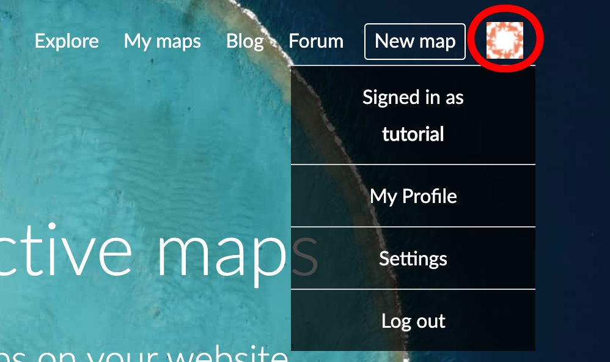
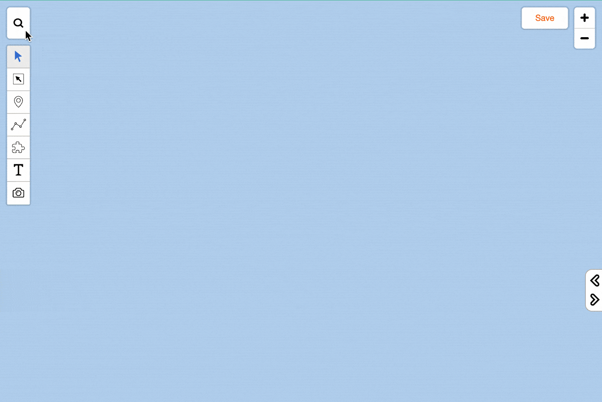
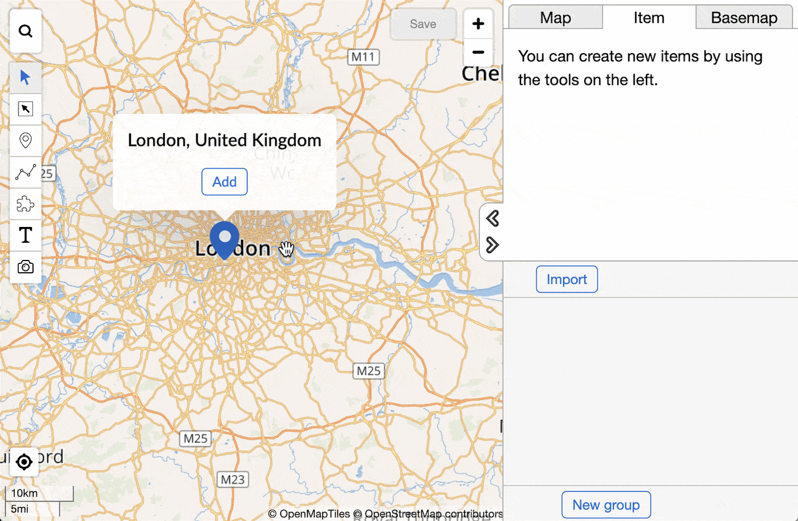
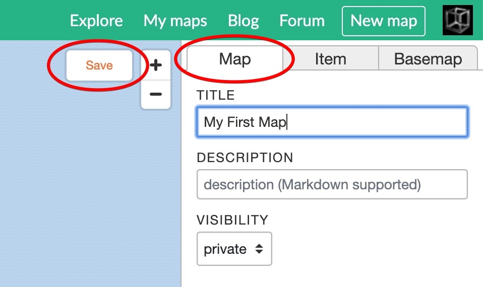

Creating your first map
In this tutorial, we'll create a new map, search for a place and save it to your My Maps folder.
Go to https://maphub.net
If you haven't registered yet, in the top right corner select Sign up. Register with your chosen username and check your email to verify your account.
You can see you are logged in from the top right corner's icon. That opens your personal menu.

Click on the New Map button, to create a new map.
Use the Search icon to search for an interesting place. After typing the name and press the
Enterkey to search.
Click Add to save the item on your map.

Click on the Map tab, give a Title to your map and save it.

After saving the map, the map gets a unique URL on MapHub.net, you can see it in the browser's location bar. Using this link, later you will be able to share your map if you decide to set the visibility to "public".
You can access all your saved maps by clicking the My Maps button in the top bar.

Congratulations, you've created your first map!
In the next chapter, we'll get familiar with the drawing tools in MapHub.